#### Smart Modeling for Digital Literary History <img height="60" data-src="img/basics/mimotext-logo.png"> <br/> <hr/> <p>Christof Schöch, Maria Hinzmann,<br/>Katharina Dietz, Julia Röttgermann, Anne Klee</p> <hr/> <p><strong>Smart Data X Digital Humanities: 11th International Conference of Digital Archives and Digital Humanities (DADH2020), Academia Sinica, Taipei, Taiwan, Dec. 1-4, 2020</strong><br/> <p><a href="https://mimotext.github.io/literary-history/">https://mimotext.github.io/literary-history/</a></p> <hr/> <img height="50" data-src="img/basics/tcdh-slim.png"> <img height="50" data-src="img/basics/uni-trier.png"> <img height="50" data-src="img/basics/mwrlp.svg"> :: - Collaborative project - Funded for 3 years by the regional government - Key question: - How can make the most out of digital methods for Literary History today? -- ## Overview 1. [Introduction: The MiMoText Project](#/2) 1. [Bibliographies](#/3) 1. [Scholarly Publications](#/4) 1. [Primary Sources](#/5) 1. [Conclusion: Bringing it all together](#/6) :: - Basically skip this! -- ## The MiMoText Project --- #### Context: Trier Center for Digital Humanities <a href="img/tcdh.jpg">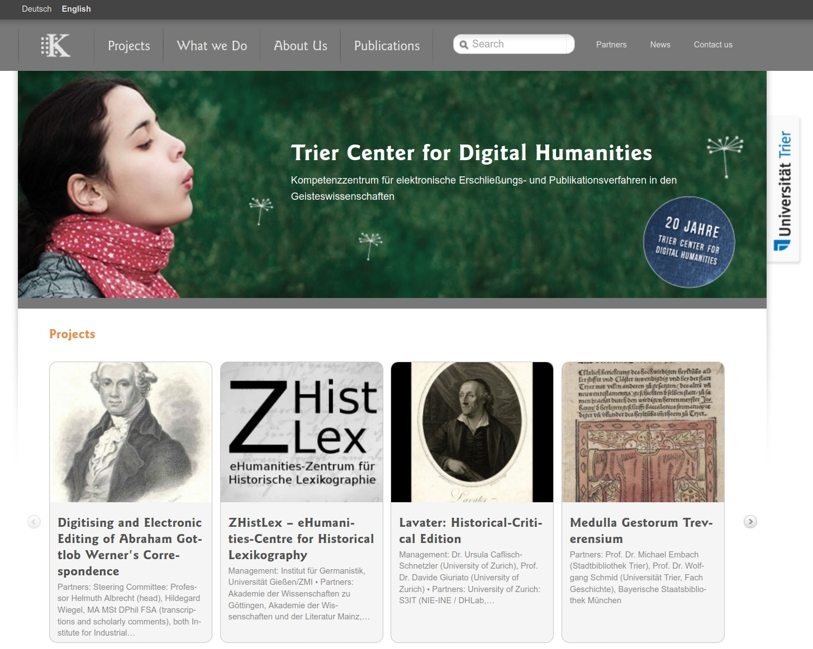</a> <p><a href="https://tcdh.uni-trier.de">tcdh.uni-trier.de</a></p> :: - "MiMoText" is a project located at the TCDH, Trier University, Germany - The TCDH has been founded in 1998 and is one of the oldest DH centers in Europe - Our areas of specialty include: - scholarly digital editions - digital lexicography - research software - and computational literary studies. - The MiMoText project is part of the CLS research area --- #### MiMoText: overview <a href="img/mimotext-overview_eng.png">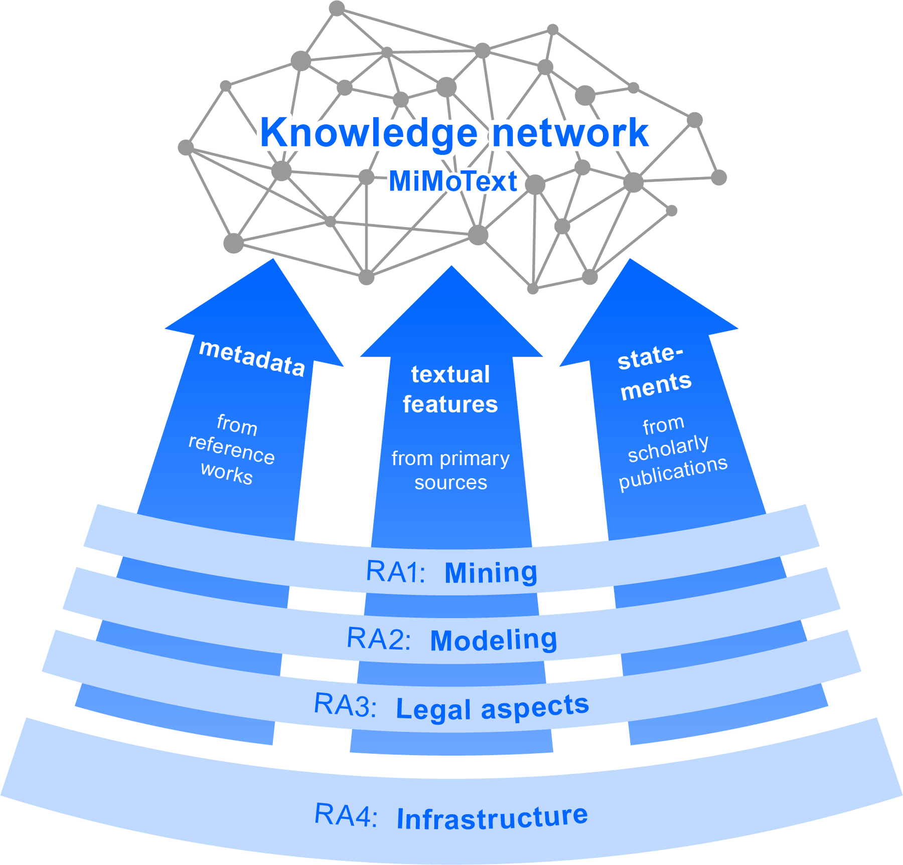</a> <br/> 1. Bibliographies: metadata modeling 2. Primary Texts: analysis results 3. Scholarly Publications: statement extraction 4. Methods of Analysis (Machine Learning) :: - Our key goal is to provide a dense network of information for literary history - We aim to create a model for a "wikidata for literary history" - More importantly, our goal is to develop the methods and models needed to do this on a large scale - We currently focus on 18th-century French literature - What we need to build such an information network is: - (A) Three sources of information - Bibliographies: metadata modeling - Primary texts: novels; results from quantitative analysis - Scholarly publications (literary histories): statment extraction - (B) You also need - A Data Model (Ontology, Data structure) - Methods of Analysis (Annotation, Machine Learning) --- #### Smart Data, Smart Modeling <a href="img/story-of-smart-big-data.png">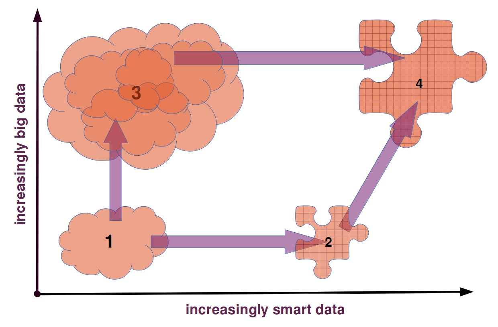</img></a> <p>Schöch, "Big? Smart? Clean? Messy? Data in the Humanities" (2013)</p> :: - With this project, we believe that we can contribute to a "third way" for DH: - Not concerned with "small data": scholarly editions - Not concerned big data: deep learning) - Instead, a third way: - mid-sized, somewhat-structured datasets - richly, but automatically, annotated text corpora - allowing sophisticated information retrieval methods and queries - allowing for analyses far beyond the canon of famous literary texts; but still focused on the literary domain - Similar to the rich databases of historical information important in Asian DH (as far as I can tell) - Based on full text and automatic information extraction - We operate in the Linked Open Data paradigm (not Databases) - Focused on literary studies (rather than History) -- ## (1) Metadata (Bibliographies) --- #### *Bibliographie du genre romanesque* : Candide <a href="img/bgrf-Candide.png"><img height="450" src="img/bgrf-Candide.png"></img></a> <p>Martin / Mylne / Frautschi: <em>Bibliographie<br/>du genre romanesque français, 1751-1800</em>, 1977</p> :: - An example entry in the printed bibliography - ~2600 such entries (novels) - carefully-curated data, published in 1997 - defines our population: all novels ever published in the period --- #### *Bibliographie* modeled as RDF <a href="img/bgrf-Diderot-RDF.png">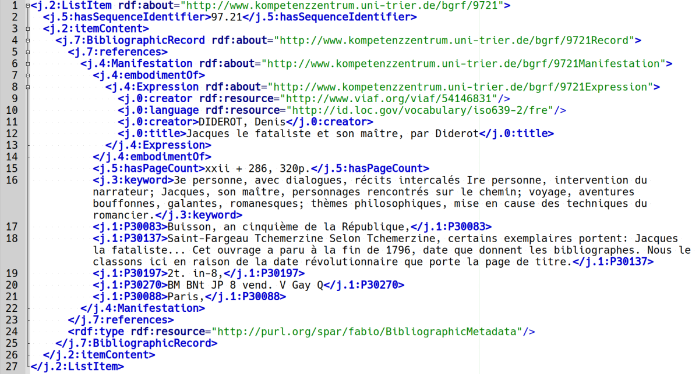</img></a> :: - This is how this looks like when modeled in RDF (as Linked Open Data) - The data is modeled using Dublin Core and the SPAR family of ontologies - Contains about 58.000 triples (22 per novel) - Includes statements about the content, plot, setting, protagonists of many of the novels (!) -- ## (2) Primary Sources --- #### The "roman18" corpus <img height="400" src="img/roman18.jpg"></img> <br/><p><em>Collection of Eighteenth-Century French Novels (1750-1800)</em></p> <p><a href="https://github.com/MiMoText/roman18">github.com/MiMoText/roman18</a></p> :: - Corpus size: currently 96 volumes (work in progress) - Not a representative sample (random sample of population) - Rather, balanced for a few key criteria - decade of writing (1750-1800) - type of narration (memoirs, third-person, epistolary, dialogue) - male and female authors --- #### The "roman18" corpus: digitization 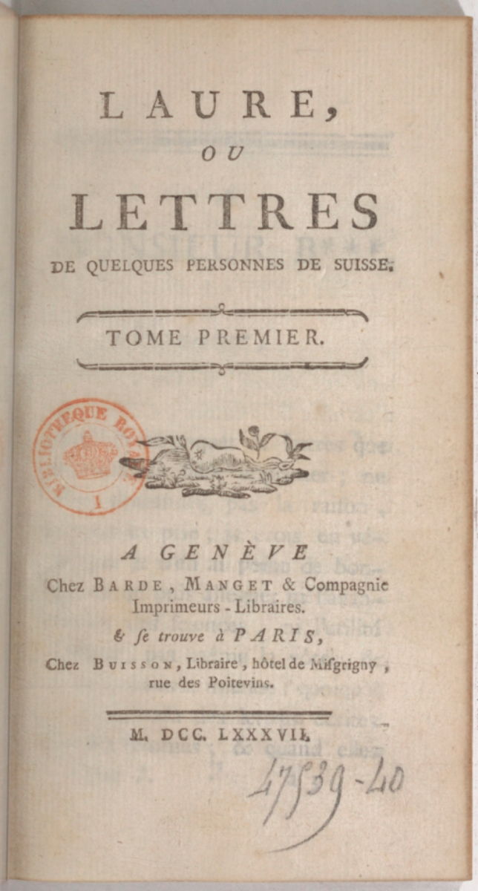</img> 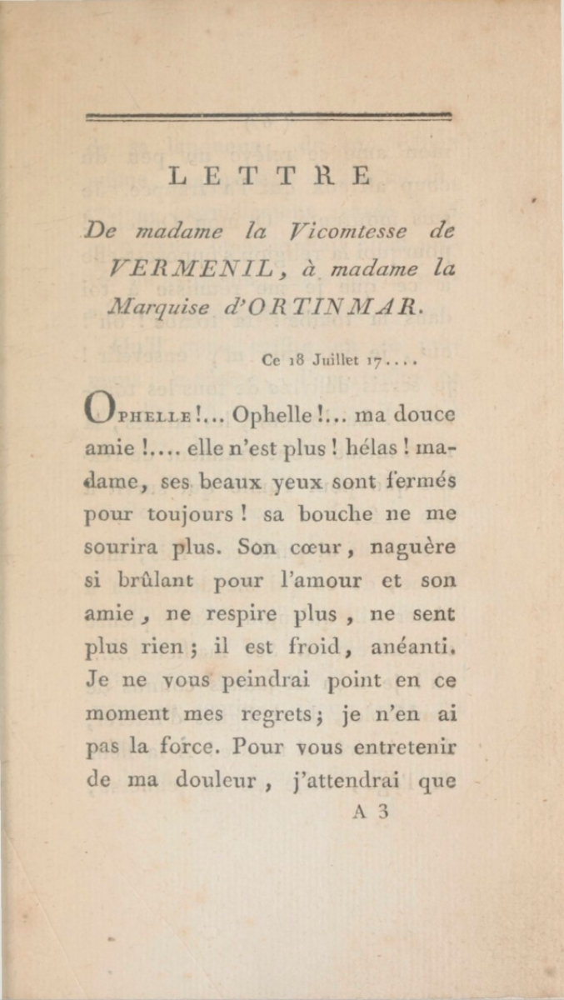</img> 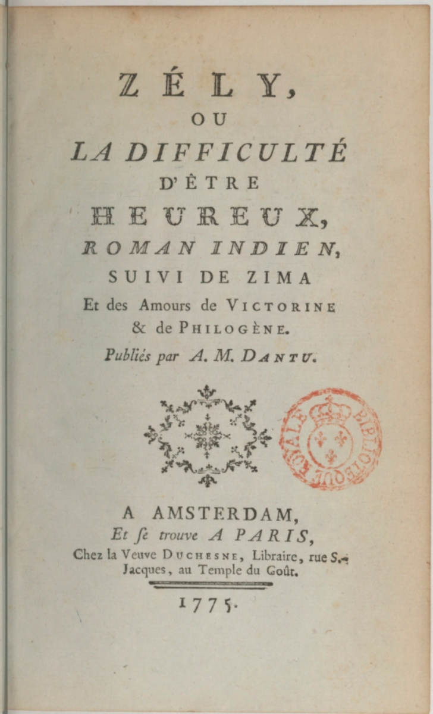</img> <a href="img/zely1.jpg">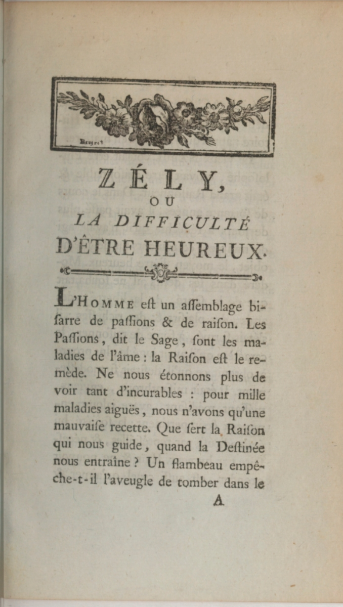</img></a> * Most important source: French National Library (PDF scans) * Full-text digitization (Double Keying, OCR model) * Simple encoding in XML-TEI (ELTeC schema) --- #### Topic Modeling: Two major topics <br/> "monarchy" "love" <br/>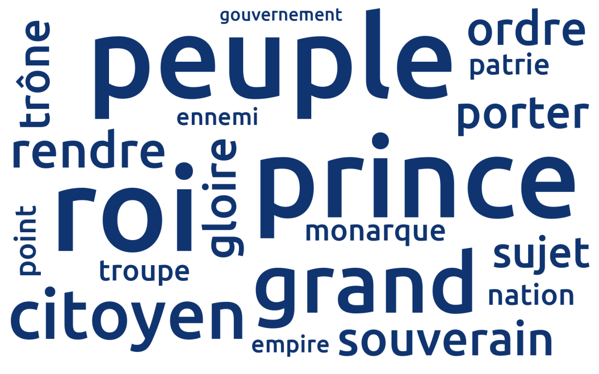</img> 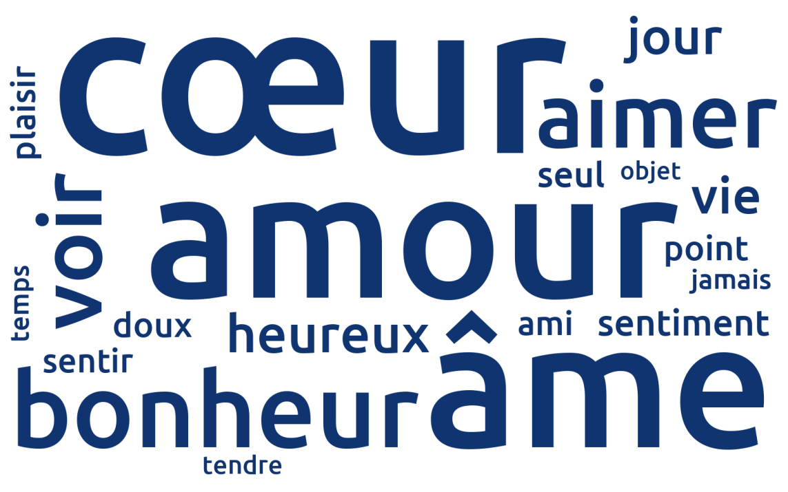</img> * Derived example statements * Candide ABOUT "monarchy" * Clarice ABOUT "love" :: - -- ## (3) Scholarly Publications --- #### Statement Extraction 1. Named Entity Recognition (automatically) 2. Statement Annotation (manually, to create training data; shown here) 3. Statement Extraction (using Machine Learning, based on training data) --- #### Named Entity Recognition ><span style="background-color:yellow">Candide [WORK]</span> is <span style="background-color:yellow">Voltaire's [PERS]</span> most widely read work, and was probably already during <span style="background-color:yellow">the author's [PERS]</span> lifetime. When <span style="background-color:yellow">it [WORK]</span> first appeared in print in <span style="background-color:yellow">Geneva [LOC]</span> in <span style="background-color:yellow">1759 [TIME]</span>, it was immediately banned, but only with the result that it was reprinted thirteen times in the same year. (Köhler) * Recognition results (spaCy, F1-score) * PERS: 0.864-0.917 * LOC: 0.829-0.837 * WORK: 0.451-0.497 --- #### Statement Annotation 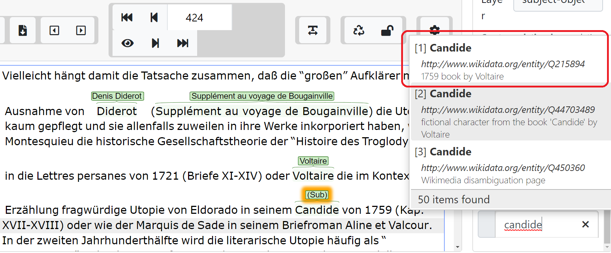</img> 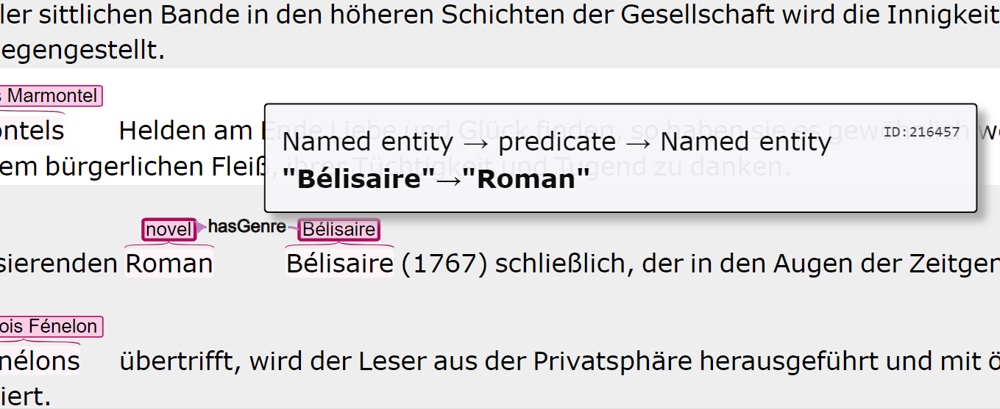</img> :: - Second step: Statement Annotation - To improve the Named Entity Recognition (here, at the top: disambiguation) - To generate training data (here, at the bottom: "Bélisaire HAS_GENRE novel" -- ## Bringing it all together --- #### LOD about *Candide*: metadata 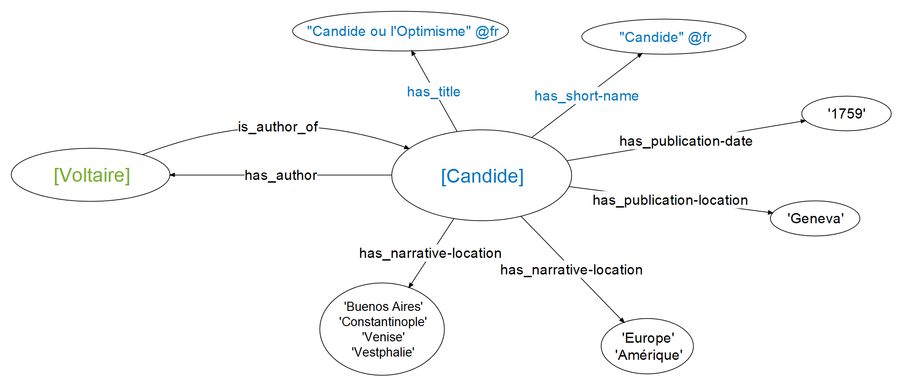 :: - LOD: enables us to think in terms of minimal statements - Statements consist of atomic units: subject, predicate, object - The key challenge is in the underlying, subject-specific ontology --- #### LOD about *Candide*: ABOUT 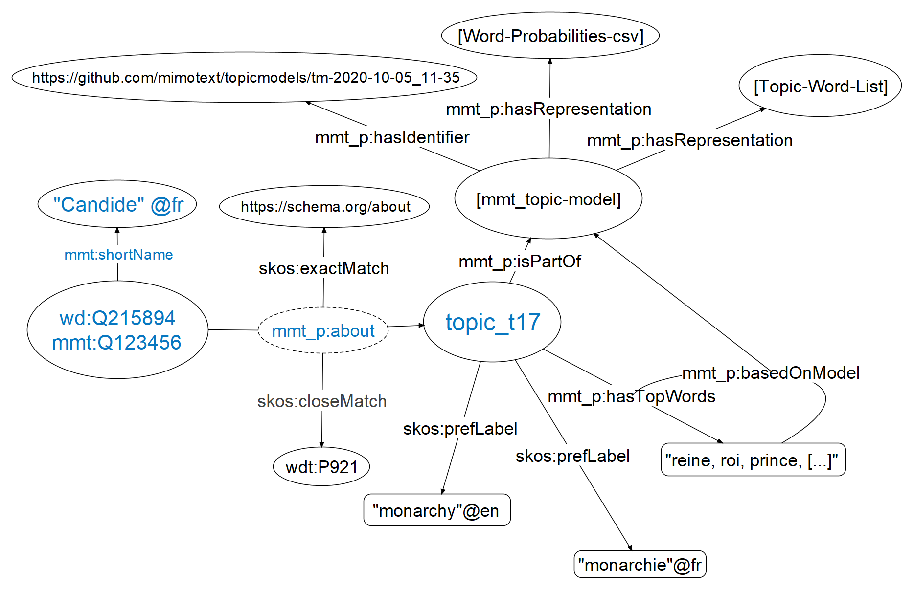 :: - Another network, focused on the themes in Candide - ABOUT statements can be derived from the bibliography, from primary sources, from scholarly publications - The labels for these ABOUT statments come from a fixed vocabulary we designed - Each ABOUT statement has a specific source: a model, a publication, etc. - The sources need to be represented in the model as well - This network forms the basis of our "Wikidata for Literary History" - Users can browse, search, and query using SPARQL queries - For literary historians, this will just be the beginning, of course! - A new way of distant reading and literary history - Doesn't aim to tell a particular story - It leaves the challenge of creating such a story to each user. - Thank you! --- ### Thank you!<br/><br/>Questions or comments? <br/><br/> <br/><br/> slides: [mimotext.github.io/literary-history/](https://mimotext.github.io/literary-history/) project: [mimotext.uni-trier.de/](https://mimotext.uni-trier.de/)